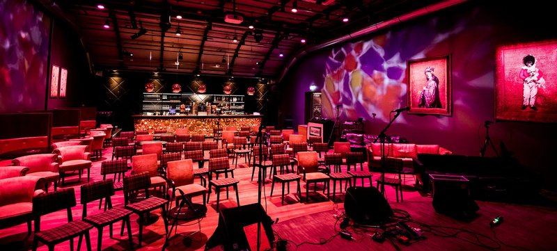

Junior Jazz Academy
Een waanzinnig leuke XL bigband!
- Dag
- zaterdag
- Begin
- 14:00
- Einde
- 14:45
- Soort
- Show
- Locatie
- Verkade
- Plek
- Clubzaal
Junior Jazz Academy
Een waanzinnig leuke XL bigband! Als muziek maken je allergrootste hobby is dan krijg je hier de kans om het samen met je leeftijdsgenoten te doen. De Junior Jazz Academy staat onder leiding van de Bossche jazzmuzikant Jeroen Doomernik.
Het is een superleuke bigband band met jonge ambitieuze muzikanten in de leeftijd van 13 tot 17 jaar die hun instrument goed beheersen en ook durven te improviseren. Er wordt swingende muziek gespeeld in allerlei stijlen met leuke soms pittige arrangementen.
De Junior Jazz Academy zijn:
Robin de Wit - dwarsfluit
Yara Beurskens - trompet
Marnix Christis - trompet
Rik Ansing - trompet
Felix Eggermont - trompet
Jelle Zwart - bugel
Floor Ansing - altsax
Evy Walrave - altsax
Anouk Braakhuis - altsax
Milo Huiskeshoven - altsax
Renee Schuurmans - tenorsax
Hidde Zeinstra - trombone
Sid van Hulst - bastrombone
Jesse van de Blij - piano
Rosa van Geffen - gitaar
Seis Doomernik - gitaar
Tijn van de Kooij - basgitaar
Jeroen Henderix - drums

 Verkade
Verkade

Clubzaal Theaterzaal Concertzaal
In de Verkadefabriek werden vroeger koekjes gemaakt, maar nu theater, film, dans en muziek.

“Bij de Verkadefabriek gaat het programma erin als zoete koek. Ze geven je een kijkje in hun keuken, maar ook kun je er zelf aan de slag: kom met je wilde ideeën, dan maken zij er wel chocola van! Tijdens het festival serveren ze lekkers in alle soorten en (for)maten. Maar met alle jonge Bossche talenten die er optreden krijg je vooral een koekje van eigen deeg!"
Clubzaal
Nieuw op RAUWKOST: de meest rauwe jazz in een super sjieke clubzaal met uitstekend geluid. Voor de liefhebbers een must, voor de ontdekkers een aanrader!
Waar dan?